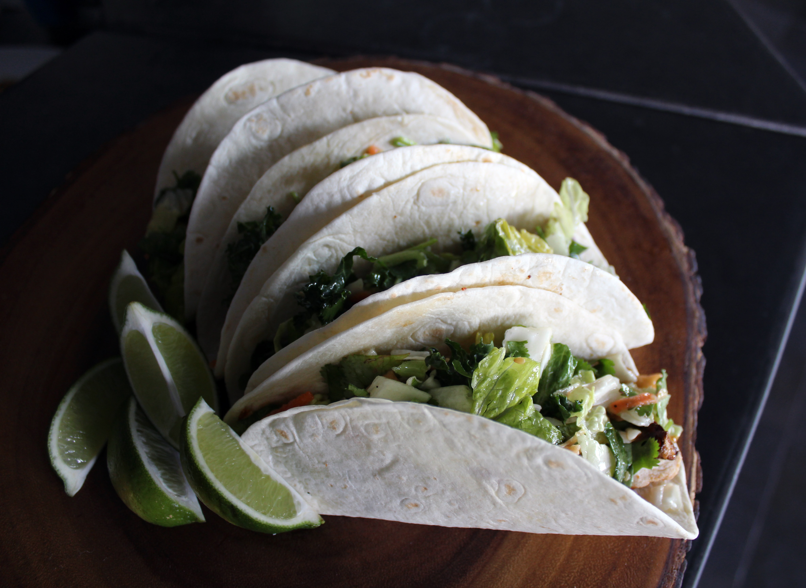
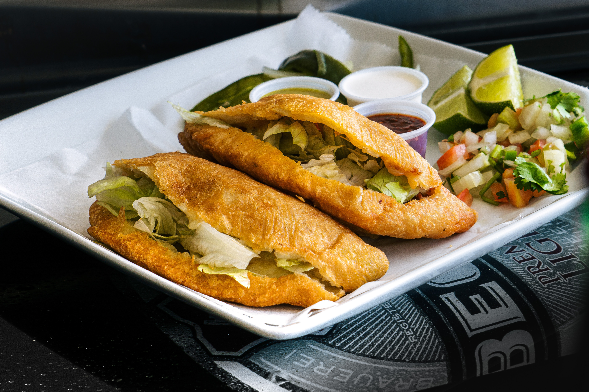

Indian cuisine consists of a variety of regional and traditional cuisines native to the Indian subcontinent. Given the diversity in soil, climate, culture, ethnic groups, and occupations, these cuisines vary substantially and use locally available spices, herbs, vegetables, and fruits. Indian food is also heavily influenced by religion, in particular Hinduism, cultural choices and traditions. Centuries of Islamic rule, particularly by the Mughals, also introduced dishes like samosa and pilaf. Historical events such as invasions, trade relations, and colonialism have played a role in introducing certain foods to this country. The Columbian discovery of the New World brought a number of new vegetables and fruit to India. A number of these such as potatoes, tomatoes, chillies, peanuts, and guava have become staples in many regions of India. Indian cuisine has shaped the history of international relations; the spice trade between India and Europe was the primary catalyst for Europe's Age of Discovery. Spices were bought from India and traded around Europe and Asia. Indian cuisine has influenced other cuisines across the world, especially those from Europe (especially Britain), the Middle East, Southern African, East Africa, Southeast Asia, North America, Mauritius, Fiji, Oceania, and the Caribbean.
Ingredients:
- Semi-sweet dark chocolate 200 grams
- Butter 1/2 cup (115 grams)
- Granulated sugar 1 cup
- Brown sugar 1/2 cup
- Eggs 3 medium size
- Salt 1/4 tsp
- Vanilla essence 1 tsp
- All-purpose flour 1/2 cup
- Cocoa powder 1/4 cup
Ingredients :
- 7 cups water
- 4 bolillo breads
- 5 piloncillo (evaporated cane sugar)
- 1 cinnamon stick
- 4 cloves
- Zest of 1 orange
- 1 cup peanuts
- 1 1/2 cups Prunes
- 1/2 cup raisins
- 1 pack queso fresco
- Butter
Tip‼️
Use 3 to 4 cups of syrup for the bread pudding
Ingredients:
- 1 cup (240ml) water
- 1 cup (125g) all-purpose flour
- 1 stick butter (110g)
- 2 tbsp sugar + 1/4 cup for coating
- 3 eggs
- 1/4 tsp salt
- Oil
- 1 tsp cinnamon
- Chocolate sauce:
- 200g dark chocolate
- 1 cup heavy cream
Directions:
1. In a small saucepan over medium heat, combine water, 2 tablespoons sugar,
salt and butter. Bring to a boil and reduce the heat to low. Stir in flour
until mixture forms a ball, about 1 minute.
2. Add eggs, 1 at a time, beating until incorporated after each addition;
spoon mixture into a pastry bag fitted with a large open-star tip.
3. Heat oil for frying in a Dutch-oven or deep skillet to 356F (180C). Pipe
strips of dough into hot oil using a pastry bag. Fry until golden; drain on paper towels.
4. Combine 1/4 cup sugar and 1 tsp cinnamon. Roll the churros in the mixture.
5. Chocolate sauce: heat heavy cream. Pour the cream over the chocolate. Let
sit 1 minute. Stir well until smooth.
6. Serve immediately.
Ingredients :
For Nachos Dough
½ cup Maize flour, roasted , मकई का आटा
¼ cup Refined flour , मैदा
½ cup Whole wheat flour , गेहूं का आटा
Salt to taste , नमक स्वादानुसार
1 tbsp Ginger-Garlic water , अदरक लहसुन का पानी
1 tsp Vinegar , सिरका
Water , पानी
For Pickled Chillies :
¼ cup Vinegar , सिरका
3-4 Fresh Green or Red chillies, chopped , ताजी हरि या लाल मिर्च
A pinch Salt , नमक
For Pico de Gallo / Fresh Salsa :
2 medium Tomatoes, chopped , टमाटर
1 medium Onion, chopped , प्याज
2 heaped tbsp Tomato ketchup , टाॅमेटो केचप
2 fresh Green chillies, chopped , हरी मिर्च
2 tbsp Coriander leaves, chopped, धनिया पत्ता
Salt to taste , नमक स्वादानुसार
½ small Lemon juice , नींबू का रस
¼ cup Corn kernels, boiled , भुट्टे के दाने
For Cajun Spice or Nacho Spice :
1 heaped tbsp Cumin seeds , जीरा
1 heaped tbsp Coriander leaves , धनिया के बीज
1 tsp Salt , नमक
1 heaped tbsp Degi red chilli powder , देगी लाल मिर्च पाउडर
½ tsp Dried Mango powder , आमचूर पाउडर
1 tsp dried Oregano , सूखा हुआ ओरिगैनो
For Cheese Sauce :
2 tbsp Butter , मक्खन
½ tsp Turmeric powder , हल्दी पाउडर
300 ml Milk , दूध
½ cup Cheese , चीज
2 tbsp Corn-starch slurry , कॉर्न स्टार्च का लिजाम
1 ½ tsp Chilli Oil (optional) , चीली ऑयल
Other Ingredients :
Oil for frying , तेल तलने के लिए
2 tsp Nacho spice , नाचो स्पाइस
2 tbsp Mayonnaise , मायोनिज
Fresh Coriander leaves , धनिया पत्ता
Ingredients :
7 cups Ap flour
2 and 3/4 cups warm water (90 to 100 degrees)
2/3 of cup lard (155 g)
3 Tsp salt (Morton)
Extras: 2 Tbsp water and flour
Ingredients :
1 pound Cod (tilapia or shrimp)
1 cup of lime or lemon juice(20 key limes)
1/2 cup Clamato (tomato cocktail)
1/2 can of v8 juice (5.5-ounce can)
1 small chopped cucumber
1 chopped tomato
1/2 small chopped purple onion
Cilantro, salt, pepper to taste
Optional Serrano pepper or chiltepines
CHUNKY GUACAMOLE INGREDIENTS:
►3 large avocados
►1/2 white onion (sharp and clean flavor)
►1/3 bunch or 1/2 cup cilantro, chopped
►1 diced tomato
►3 Tbsp lime juice from 2 limes
►1/2 tsp sea salt, or to taste
►1/4 tsp black pepper, or to taste
CORN GUACAMOLE INGREDIENTS:
► 3 large avocados
►2 grilled ears of corn
►1/2 red onion (sweeter flavor)
►1/3 bunch or 1/2 cup cilantro, chopped
► 2-3 Tbsp lime juice from 2 limes
►1/2 tsp sea salt, or to taste
►1/4 tsp black pepper, or to taste
►1/2 tsp cumin
SPICY GUACAMOLE INGREDIENTS:
►3 avocados
►1 firm medium tomatoes
►1/2 white onion
►1/2 cup cilantro (1/3 bunch)
►2 jalapeños peppers, finely chopped (or serrano for spicier version)
►2 cloves garlic, pressed
►3 Tbsp Lime juice (from 2 limes), or to taste
►1/2 tsp kosher salt or to taste
►1/4 tsp ground black pepper or to taste
►1/2 tsp Cumin
INGREDIENTS :
• 2 (15-ounce) cans fire roasted tomatoes or use 4 cups chopped fresh tomatoes (1 3/4 pounds).
• 1/3 cup chopped white or sweet onion (half medium onion).
• 2 medium cloves garlic (2 teaspoons minced).
• 1 to 2 medium jalapeño or serrano peppers, with stems, membrane and seeds removed.
• 1 cup chopped fresh cilantro.
• 1 to 2 medium limes.
• 1/2 teaspoon fine sea salt, plus more to taste.
INGREDIENTS:
Traditional Pico de Gallo
1 lb roma tomatoes, fresh
1/2 large white, onion (1 cup)
1 ea serrano pepper
1/2 bunch cilantro, fresh (3/4 cup)
1 tsp salt, kosher (to taste)
1 ea lime Juice (3 TBSP)
Pico de Gallo 2nd way
1 lb roma tomatoes, fresh
1/2 large red, onion (1 cup)
1/2 ea habanero
1 avocado, large
1/2 bunch cilantro, fresh (3/4 cup)
1 tsp salt, kosher (to taste)
1 ea lime Juice (3 TBSP)
Ingredients:
2 pounds of Pork
20 pods of Red Chili
1 cup of water
6-8 cloves of garlic
1 tblspn of Oregano
1 tspn of Salt
1/2 tspn of Black Pepper
1 tblspn of diced Onion
Heat oven to 350 degrees cook for 30-45 minutes depending on the sizes of the meat.
Ingredients:
Preheat oven
1st bake at 425 Degrees for 10 minutes.
2nd bake at 350 Degrees for 35 Minutes.
Dough ingredients :
4 cups AP Flour
1 cup cold water +2 ice cubes
1/2 cup lard
1/2 cup salted butter
1 Tsp salt
Pinch of sugar
1 egg
Filling ingredients :
Oil
1 pound ground beef
2 medium potatoes + 1 1/2 cup water
1 green onion
1 roasted Anaheim pepper
1/2 medium chopped onion
3 Tbs chopped cilantro
1 Tsp salt
1/2 Tsp black pepper
Ingredients -
1 Tbsp Olive Oil
1 Onion (chopped)
1 tsp Garlic (minced)
1 Green Chilli (slit)
1 Cup Chicken Sausage (sliced)
2 tomatoes (Pureed)
1 tbsp Red Chilli Powder
1 tsp Black Pepper Powder
1/2 tsp Dried Herbs
1/4 tsp Red Chilli Flakes
1 tsp Cumin Seed Powder
1/4 cup Kidney Beans (Boiled)
1/2 Cup Corn Kernels
3/4 cup Rice (washed & soaked)
1 cup Water
Salt
Juice of 1/2 Lemon
1/4 cup Water
Salt
1/2 cup Mix Bell pepper
INGREDIENTS :-
2 TBSP VEGETABLE OIL
MINCED SERRANO PEPPERS (seeds optional)
1/2 MEDIUM DICED ONION
6 XTRA LARGE EGGS (well beaten)
2 LARGE ROMA TOMATOES (Diced)
SALT (to your liking)
CHOPPED CILANTRO (optional)
REFRIED BEANS :-
2 TBSP BACON GREASE (or vegetable oil)
1/4 C. DICED ONIONS
1 LARGE GARLIC CLOVE (minced)
BEANS (I used about 4 Cups)
SMALL PIECE HAM HOCK
Ingredients :
2 tsp red chilli powder
Some finely chopped green chillies
Water
1 tsp roasted cumin seeds powder
Add 1/2 cup mix of sweet corn and green peas
1.5 cup cooked rice
200 gm Tofu
2 tortilla wraps(maida roti - optional)
Some shredded cheese
3-4 coriander leaves
3-4 mint leaves
Method :
For Rajma Spread :-
Heat up the pan, pour 1 tsp oil
Add some cumin seeds(jeera)
Add 2-3 finely chopped garlic cloves
Add 1/2 finely chopped onion
Add 1 tsp salt
Add some Mexican seasonings
Add 1 finely chopped tomatoes
Add 1 cup boiled rajma(soaked overnight)
Add some water and crush rajma with a help of spoon
Add 1 tsp red chilli powder, mix it well and turn off the stove.
Transfer the mixture in a bowl, rest it for a while, further grind the mixture & make a thick paste.
For Rice :-
Heat up the same pan, pour 1 tbs oil/butter
Add 2-3 finely chopped garlic cloves
Add 1/2 finely chopped onion
Add some finely chopped green chillies
Add 2 tsp salt
Add 1 tsp roasted cumin seeds powder
Add 1 tsp red chilli powder
Add some Mexican seasonings
Add 1/2 cup mix of sweet corn and green peas
Add 1.5 cup cooked rice(basmati rice/ brown rice/quinoa/khus khus - optional) and mix it well.
For Tofu:-
Fry 200 gm tofu(paneer/nuggets/fries - optional) with some salt, red chilli powder & roasted cumin
seeds powder (paneer/nuggets/fries - optional)
For Tomato Salsa :-
Take a mixing bowl
Add 3 finely chopped tomatoes
Add 1/2 finely chopped onion
Add some finely chopped green chillies
Add some finely chopped coriander
Add 1 tsp salt
Add 2-3 tsp tomato ketchup/tomato juice and mix it well.
To Make Burrito Roll :-
Take a plate, place a tortilla wraps(maida roti - optional) on it.
Place 1 tbs rajma mixture and spread it over tortilla wrap
Place 3 tbs rice
Place 1 tbs tofu
Place 2 tbs salsa mixture
Place some shredded cheese
Place some coriander and mint leaves on top
Now fold burrito from sides and roll it.
(Roll another burrito with same procedure)
To Grill Burrito :-
Heat up the grill pan/flat pan, pour some oil on it
Place burritos on the pan(keeping folded side down)
Brush some oil on it spreaded on the pan
Flip the sides when it is nicely grilled.
And then your Healthy Wholesome Meal with little Cheesy Twist Mexican Burrito is ready.
Cut the Burrito and serve it hot!!!
INGREDIENTS :
1 lb Cod Fish (catfish or tilapia work too)
1 large egg
1 cup beer (substitute beer f/Topo Chico to make alcohol free)
3/4 cup all purpose flour
1/4 cup corn starch
1 tsp baking powder
1 tbls paprika
2 tsp cayenne pepper (add up to a tbls for a spicier batter)
1 tsp salt
1 tsp pepper
2 tsp garlic powder (optional)
1 tsp onion powder (optional)
CREAM SAUCE RECIPE :
1/2 cup Mayo
1 to 1 1/2 cups of Mexican Crema
1/2 of a medium lime juice
2 tbls to 3 tbls hot sauce of your choice
Ingredients :
Oil (avocado)
1 shredded rotisserie chicken
1/2 Tbsp black pepper
1/2 Tbsp garlic powder
1/2 ground cumin
3/4 cup warm water + 1/2 Tbsp Knorr chicken bouillon
Giant tostadas from Tostaderia Lafe
Thinly sliced iceberg lettuce
Purple pickled onions
Avocado
Cotija Mexican cheese
Mexican sour cream (lala)
Quick and easy salsa
5 small tomatoes or 3 Roma Tomatoes
1 tomatillo
1 serrano
3 garlic cloves
3/4 of warm water
1/2 tbsp salt
Ingredients :
1 1/2 lbs Skirt Cut Steak ( I let mine Sit out for 1 -2 hours to get to room temperature)
Course Kosher Salt
2 TBSP Worcestershire Sauce
1 Tbsp Oilve oil
2 tsp chilli power
1 Tsp ground oregano
1 Tsp garlic powder
Diced onion
Fresh Cilantro
Corn tortillas
Ingredients:
6 Flour tortillas
1 Onion, chopped
2 cloves Garlic, crushed
1½ lb. (675g) Ground beef
2 tablespoons (30g) Tomato paste
1 teaspoon Salt
1/2 teaspoon Black pepper
1/4 teaspoon Red chili flakes
1/2 teaspoon Cumin
1 teaspoon Paprika
1 teaspoon Oregano
8 oz (225g) Cheddar cheese or any other cheese of your choice
Cilantro
3-4 tablespoons Oil
3 tablespoons Water/beef stock
Directions:
1. In a large skillet or a pan, heat 2 tablespoon of oil. Add chopped onion
and sauté over low heat for 4-5 minutes. Add crushed garlic and sauté for
1-2 minutes. Add ground beef, cook, breaking it apart, for 4-5 minutes. Add
tomato paste, seasoning and cook, stirring for 2 minutes. Add water/beef stock
stir and cook for 2 minutes. Turn the heat off.
2. Heat a large skillet over medium-low heat. Brush each tortilla with 1 teaspoon
of oi (only one side). Sprinkle about 2 tablespoons of shredded cheese on one
side of each tortilla. Sprinkle some ground beef mixture over the cheese, then
some cilantro, and extra cheese. Fold tortilla over, place in the hot pan.
3. Cook for about 2 minutes on each side, until golden brown and cheese is melted.
FAJITA SEASONING:
1 TBSP:
Garlic powder
Onion powder
Italian seasoning
2 TSP:
Trader Joe’s Chili Lime
Chili powder
Pepper
Adobo
Cumin
1/2 TSP
Cheyenne seasoning
2 limes
1 bottle of Mexican beer
Absorption method :
Ingredients:
• Oil 1 tbsp + butter 1 tbsp
• Garlic 1 tbsp (chopped)
• Onions 1/2 cup (chopped)
• Tomato puree 1/2 cup
• Salt to taste
• Powdered spices:
1. Lal mirch (red chilli) powder tsp
2. Dhaniya (coriander) powder 1 tsp
3. Jeera (cumin) powder 1 tsp
4. Oregano 2 tsp
5. Red chilli flakes 2 tsp
• Ketchup 1 tbsp
• Soaked rice 1 cup
• Sweet corn 1/3rd cup
• Yellow bell pepper 1/3rd cup
• Green bell pepper/capsicum 1/3rd cup
• Red bell pepper 1/3rd cup
• Fresh jalapeno/pakode wali mirchi 1/4th cup
• Cooked red rajma beans 1/2 cup
• Vegetable stock/hot water 2 cups
• Fresh coriander 1 tbsp (chopped)
Method:
• Set a wok on medium heat, add oil & butter, let the butter melt
and turn the flame to high, add garlic and cook for a minute on high flame.
• Further add onions, stir & cook until the onions are light golden brown in colour.
• Further add tomato puree & salt, stir & cook for a minute, further low down the
flame and add the powdered spices & tomato ketchup, stir & cook for 3-4 minutes on high flame.
• Further add soaked rice, veggies & cooked rajma beans, gently stir & cook for a minute.
• Now, add the vegetable stock & stir gently, taste the stock & adjust the seasoning accordingly.
• Lower the flame, cover & cook on low flame until the rice is cooked, make sure to check after
5 minutes & give it a gentle stir or else it may stick to the pan. The rice may take about
10-12 minutes to cook.
• Once cooked dd soe fresh coriander leaves and switch off the flame, cover and let it rest
for around 5 minutes, after resting, use a fork and fluff up the rice.
• Your Mexican rice is ready, serve hot by topping it up with some processed cheese, crushed
nacho chips and some salsa on side.
Salsa :
Ingredients:
• Onions - 2 medium sized (diced)
• Tomatoes - 3 medium sized (diced)
• Fresh jalapenos/pakode wali mirchi - 2-3 nos. (chopped)
• Tomato ketchup - 2 tbsp
• Handful of fresh coriander (roughly torn)
• Lemon juice - 1 no.
• Salt to taste
Method:
• Use a food processor and all the ingredients in it, use pulse mode to break down the
tomatoes while keeping it little chunky, your salsa is ready, keep it refrigerated until you use it.
INGREDIENTS:
Shrimp
Jalapēno peppers (I used red & green)
Roma Tomatoes
Green Onion
Tequila
Salt
Pepper
FOR THE COMPOUND BUTTER...
Butter
Garlic
Chipotle Pepper
Lime
Cilantro
Salt
Pepper
Ingredients:
4 pieces of chicken breast with rib
20 corn tortillas
Black or pinto beans
Sweet corn
5 roma tomatoes
5 New Mexico or guajillo Chile pods
1 chile ancho
Handful of cilantro
1 onion
Garlic cloves
2 bay leaves
Chicken bouillon
1 tbsp whole black pepper
1 tsp cumin
Salt
1 serving of love 💕
Ingredients:
2-4 lbs raw shrimp
5 New Mexico or guajillo Chile pods
Chile árbol I used 4
3 roma tomatoes
1/2 white onion
3 garlic cloves
2 bay leaves
7 oz tomato sauce
Cilantro or epazote
1 Mexican squash or chayote
3 carrots
3 small potatoes
I used baby corn but you can use whole
4 celery sticks
2 tsp vegetable, chicken or shrimp bouillon
5 tsp salt
1 tbsp ground dried shrimp add more if you want strong shrimp taste
1 tsp whole black pepper
1 tsp Mexican oregano
1 serving of love 💕
Ingredients :
5 Liter of Water (20 cups of water or 1 1/2 Gallons)
4-6 Pounds of Beef Soup Bones- Hueso de Res
6 Pounds Beef Chuck Roast- Trozo De Diezmillo de Res
3 Tbs Salt ( Start with 2 Tbs and adjust to taste)
1 Whole Garlic
2-3 Green Onions
1 Anaheim Pepper
3-4 Potatoes
3-4 Carrots
3 Small zucchinis
2 Whole Corns
1-2 Chayotes
20-15 Green Beans
1/2 Cabbage
Optional
Lime or Lemon
Corn Tortilla
White rice
Chiltepin- Pepper Flakes
*Please adjust water measurement to your pot
*If you want a stronger flavored broth, cook your bones for 2 Hrs before adding Beef
I hope you all enjoy this popular recipe. Lots of love, Cloud and Stephanie
Ingredients :
Oil
1 Pound of ground beef
5 cups of water
1 EGG
2 Roma tomatoes
3 Medium potatoes
1 carrots2
Small zucchini
1/2 medium onion
Small bunch of Cilantro
1 Anaheim pepper
1 Garlic clove
1 Green onion
3 Tbsp AP flour or 2 Tbsp rice
4 Tbsp Natural Chicken bouillon
1 Tbsp Tomato Sauce
1 Tsp cumin
1 Tsp Black Pepper
1 Tsp salt
Tip‼️
You can easily meal prep this recipe by preparing your
ingredients the night before.
You can also freeze the meatballs- Defrost the night before
in the fridge and prep ingredients the day of for an easy meal.
Ingredients :
1 pound poblano peppers about 8-10 poblano peppers
1 tablespoon olive oil
1 medium onion chopped (white or yellow)
1 medium carrot peeled and chopped
1 stalk celery chopped
3 cloves garlic chopped
1 cup chopped spinach loosely packed
1 tablespoon ancho powder
1 teaspoon guajillo powder
1 teaspoon Mexican oregano
1 teaspoon cumin
Salt and pepper to taste
2 cups chicken stock
1 cup milk
¼ cup Mexican crema or sour cream
FOR SERVING: Spicy chili oil, chili flakes, pepper slices, fresh chopped parsley
Cooking Directions :
Set your oven to broil. Slice the poblano peppers in half lengthwise
and place them on a lightly oiled baking sheet, skin sides up.
Broil the poblanos about 15 minutes, until the skins char and blacken. They should puff up.
Remove, cool slightly, then peel off the skins and discard them along with the seeds and stems.
Rough chop the poblanos and set them aside.
While the poblanos are roasting, heat a large pot to medium heat and add the olive oil.
Add the onion, carrot and celery and cook them down about 5 minutes to soften.
Add the chopped roasted poblano peppers, garlic, spinach, seasonings and salt and pepper.
Cook another minute, stirring.
Add the chicken stock and milk and bring to a quick boil. Reduce the heat and simmer
about 30 minutes to let the flavors develop.
Remove from heat and stir in the crema or sour cream until it is completely incorporated.
Use a stick blender to blend the soup into a thin consistency, or transfer it to a food
processor or blender in batches.
Serve in bowls and garnish with chili oil, chili flakes, pepper slices and fresh chopped parsley.